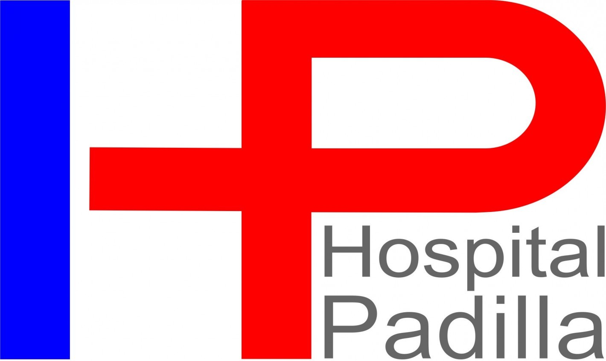
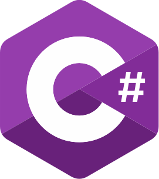

Magister en Física Médica recibido el 20/12/2021 en el Instituto Balseiro de la Universidad Nacional de Cuyo.
Trabajo de graduación: “Propuesta metodológica para la creación de una base de datos de pacientes normales en protocolo cerebral PET/MR FDG” (Nota: 9).
Título de Grado
Ingeniero Biomédico recibido el 18/12/2012 en la Facultad de Ciencias Exactas y Tecnología de la Universidad Nacional de Tucumán acreditada CONEAU Res 631/06 (promedio general 7,423).
Trabajo de graduación: “Software para planificación de procesos de irradiación gamma destinados a esterilización de Productos para el cuidado de la Salud” (Nota: 10).
Título de Secundario
Técnico en Electrónica. Instituto Técnico Salesiano Lorenzo Massa. Período: 1998-2003. Promedio: 8,34. Abanderado mejor promedio 2003.
Experiencia laboral

Departamento de Ingeniería Clínica del Hospital Ángel C. Padilla. San Miguel de Tucumán, Argentina
- Técnico electrónico. Periodo: febrero de 2012 hasta diciembre de 2012.
- Ingeniero Biomédico. Periodo: diciembre de 2012 hasta noviembre de 2014.
Experiencia
Mantenimiento y reparación de equipos de electromedicina (monitores multiparamétricos, electrocardiógrafos, cardiodesfibriladores, bombas de infusión, oxímetros de pulso, mesas de anestesia, respiradores).
Mantenimiento y reparación de equipos de diagnóstico por imágenes (equipos de rayos x, equipo de tomografía axial computada, ecógrafos, equipo de resonancia magnética nuclear).
Activa participación y colaboración en todo el procesor de instalación de un equipo Resonador Magnético Nuclear Philips Modelo Achieva 1.5T (análisis de ruidos y vibraciones del bunker, blindaje electromagnético de la sala, instalación de chiller de refrigeración del equipo, instalación del gantry y consola de control, levantamiento de campo de imán superconductor, calibración de equipo y bobinas, cargado de secuencias de estudios).
Planta de Irradiación Semi-Industrial, Centro Atómico Ezeiza, Comisión Nacional de Energía Atómica. Buenos Aires, Argentina.
- Becario. Tema de Beca Profesional: “Instrumentación y modelado de procesos”. Periodo: diciembre 2014 hasta diciembre 2017.
- El 29 de diciembre de 2017 Ingresa a Planta Permanente de la Comisión Nacional de Energía Atómica como Ingeniero en Instrumentación y Control de la Planta de Irradiación Semi-Industrial del Centro Atómico Ezeiza.
Experiencia
Desarrollo de un software de predicción de tasa de dosis y dosis absorbida de la planta de irradiación utilizando método determinístico de cálculo (Desarrollo en lenguaje Java).
Desarrollo de un modelo de la Planta de irradiación gamma utilizando el código de transportes de partículas MCNP para cálculo de tasa de dosis absorbida dentro del recinto.
Desarrollo de un software interfaz de usuario para el manejo del sistema de irradiación dinámico de la Planta de Irradiación (Desarrollo en .NET).
Colaboración en la programación del PLC (Programmable Logic Controller) del sistema de irradiación dinámico de la Planta de Irradiación.
Mantenimiento y reparación de monitores de radiación. Reparación de fuentes de alta tensión de detectores y fuentes de alimentación del equipo. Calibración de módulos de conversión corriente-tensión.
Evaluación de distintos diseños de facilidades de irradiación gamma mediante código de transporte de partículas MCNP.
Colaboración con la Subgerencia de Instrumentación y Control CNEA-CAE: Desarrollo de un software de interface de comunicación con emulador del Sistema de Protección del Reactor RA10. Programación en .NET Visual Studio (actualmente se encuentra en desarrollo).
Trabajos dirigidos
Director de beca profesional “Diseño y Desarrollo de Ingeniería Conceptual en Plantas de Irradiación”.
Becaria: Ingeniera Nuclear María José Cervantes.
Co-Director de Proyecto Final Integrador “Puesta a punto de un sistema de planificación opensource en radioterapia” de la Ingeniera Nuclear con Orientación en Aplicaciones Rosario López de San Martín Zapata. Instituto Dan Beninson (Universidad Nacional de San Martín). Director: Mg. Diego Carrasco.
Publicación en revista científica
Revista Brasilera de Física Médica ISSN 1984-9001: “Propuesta Metodológica para la Creación de una Base de Datos de Pacientes Normales en Protocolo Cerebral PET/MR FDG” González J.P, Marino E.A., Zanchi D.E., Mosconi S., Guirao M. 30/12/2022.
En esta sección se detallan los trabajos de investigación presentados en congresos y encuentros científicos
IX Congreso Latinoamericano y XXVI Congreso Brasilero de Física Médica 2022: “Propuesta metodológica para la creación de una base de datos de pacientes normales en protocolo cerebral PET/MR FDG” – González J.P, Marino E.A., Zanchi D.E., Mosconi S., Guirao M. – Fortaleza, Brasil.
XL Reunión Anual de la Asociación Argentina de Tecnología Nuclear “AATN 2013 Participación Nuclear en el panorama energético Nacional”: “Modelado de la atenuación intrínseca del producto a irradiar” – González J.P., Carrillo M., Menendez F.D. – Buenos Aires, República Argentina.
XIX Congreso Argentino de Bioingeniería VIII Jornadas de Ingeniería Clínica: “Software de predicción de tasa de dosis y dosis absorbida para esterilización gamma en una planta de irradiación” – González J.P., Carrillo M., Mangussi J., Menendez F.D. – San Miguel de Tucumán, Tucumán, República Argentina.
XXXIX Reunión Anual de la Asociación Argentina de Tecnología Nuclear “AATN 2012”: “Software para modelado de procesos de irradiación gamma destinados a esterilización de productos para el cuidado de la salud” – González J.P., Carrillo M., Mangussi J., Menendez F.D. - Buenos Aires, República Argentina.
Ponencia en 1er Encuentro Científico de Investigadores de la Facultad de Ciencias Exactas y Tecnología de la Universidad Nacional de Tucumán 2012: “Modelado y Desarrollo de Equipamiento para Aplicaciones Nucleares”.
Poster en 1er Encuentro Científico de Investigadores de la Facultad de Ciencias Exactas y Tecnología de la Universidad Nacional de Tucumán 2012: “Software para modelado de procesos de irradiación gamma destinados a esterilización de productos para el cuidado de la salud”.
Aptitudes técnicas
Conocimiento y experiencia en programación en:
Lenguaje Java
Lenguaje Python

Lenguaje C#
Conocimiento y experiencia en manejo de microcontroladores PIC.
Conocimiento y experiencia en manejo de plataforma electrónica Arduino.
Conocimiento y experiencia en manejo de PLCs (Controladores Lógicos Programables).